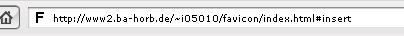
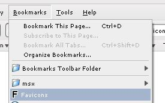
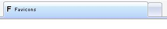

Favicons
Inhalt
Ein Favicon (
Favorit +
Icon) bietet die Möglichkeit, eine Homepage mit einfachen Mitteln
ansprechender zu gestalten und optisch hervorzuheben. Weiterhin bietet das Favicon die Möglichkeit
den Wiedererkennungswert einer Seite zu erhöhen.
Das Favicon ist ein kleines Bild, welches an verschiedenen Orten in der Benutzerumgebung des Internetusers
angezeigt wird. Am häufigsten und offensichtlichsten ist die Darstellung des Icons in der Adresszeile des
jeweiligen Browsers (s.
unterstützte Browser). Hier wird es meist links von der jeweiligen
Adresse angezeigt.

Weiterhin erscheint das Symbol ggf. beim Erstellen eines Bookmarks,

als Fileicon bei Verknüpfungen, sowie in der Titelleiste der Tabs in entsprechenden Browsern.

Favicons wurden zum ersten Mal 1998 mit dem Internet Explorer 5.0-Beta eingeführt. Als zweiter Browser unterstützte
der Linux-Browser Konqueror die Icons. Seit dem verbreitete sich die Unterstützung dafür schnell und ist heutzutage
in unterschiedlicher Implementierung unter Anderem in folgenden Browsern zu finden:
- Microsoft Internet Explorer, seit Version 5.0-Beta, 1998
- Konqueror, seit Anfang 2001
- Mozilla, seit Version 0.9.6, Ende 2001
- Netscape Navigator, seit Version 7.0-PR1, Anfang 2002
- Opera, seit Version 7.0, 2002
- iCab, seit Version 3.0b394, 2006
- Mozilla Camino
- Mozilla Firefox
- Minimo
- Galeon
- Safari
- SeaMonkey
- Shiira
- SunriseBrowser
Der IE zeigte die Icons ursprünglich erst an, wenn die entsprechende Seite zu den Bookmarks hinzugefügt wurde. Mit dem
IE7 werden sie jedoch ofort beim Laden der Seite angezeigt.
Um ein Favicon für eine Homepage benutzen zu können wird zu aller Erst ein entsprechendes Icon benötigt. Dieses
muss im Format .ico (MIME-Type image/vnd.microsoft.icon) vorliegen.
Das Format .ico ermöglicht es verscheidenen Versionen einer Grafik in nur einer einzigen Datei zu speichern.
So kann das gleiche Bild in verschiedenen Größen und Farbtiefen abgespeichert werden. Für die standardmäßige
Anzeige im Browser (Adressleiste, Bookmark) wird im Allgemeinen ein Icon in der Größe 16x16 Pixeln benötigt.
Die Farbtiefe kann dabei zwischen 2, 16 und 256 Farben variiert werden. In der Praxis sind 16 Farben meist volkommen
ausreichend, außerdem kann so die Dateigröße möglichst gering gehalten wird.
Liegt das Icon nich in der entsprechenden Größe vor, wird das von Größe und Farbtiefe am ehesten entsprechende
Bild verwendet und entsprechend konvertiert (z.B. Vergrößert/Farbtiefe reduziert). Für das Favicon ist es sinnvoll
Das Bild in der Größe 32x32 Pixel zu hinterlegen. Als Farbtiefe sind 16 Farben (Standard-VGA) meist volkommen
ausreichend.
Um das Favicon nun auch darstellen zu lassen gibt es verschiedene Möglichkeiten. Es werden jedoch nicht von allen
Browsern alle Möglichkeiten unterstützt.
Ein Favicon pro Domain: (
Codebeispiel)
Um ein gemeinsames Favicon für alle Seiten der Domain zu verwenden, ist es möglich die entsprechende Datei im
root-Verzeichnis des Webauftritts abzulegen.
Ein Favicon pro Site:
Um für jede Seite ein eigenes Favicon angeben zu können gibt es die Möglichkeit die entsprechende Datei in einem
link-Tag im Header der HTML-Seite anzugeben. Hierbei gibt es zwei verschiedene Möglichkeiten:
-
<link rel="icon" href="pfad/zum/favicon.ico" type="image/x-icon">
Codebeispiel
-
<link rel="shortcut icon" href="pfad/zum/favicon.ico" type="image/x-icon">
Codebeispiel
Auch bei dieser Variante unterstützt nicht jeder Browser beide Möglichkeiten. Die rel="shortcut icon"-Version
wird eher von älteren Browsern unterstützt, während neuere Versionen häufig nur die Version rel="icon" richtig
interpretieren. Am Sichersten ist es daher beide Varianten zu implementieren (
Codebeispiel).
Die richtige Verwendung des Favicons kann z.B. mit einem
Online Validator geprüft werden.
Wie wird es erstellt?
Um ein Favicon im gewünschten Format .ico zu erstellen gibt es verschiedene Möglichkeiten. Es kann entweder ein
Grafikprogramm nach Wahl benutzt werden um die Grafik zu erstellen. Diese wird dann in einem gängigen Format gespeichert
und mit geeigneten Konvertierungsprogrammen ins .ico-Format umgewandelt.
Es gibt jedoch auch Programme die es ermöglichen direkt Grafiken im gewünschten Format zu erstellen.
Weiterhin bieten verschiedene Anbieter die Möglichkeit an, Favicons über ein Skript direkt im Browser zu erstellen.
An dieser Stelle sollen einige hilfreiche Werkzeuge zum Umgang mit Favicons aufgelistet werden. Die hier gelisteten
Produkte sind alle als Freeware erhältlich
Online:
Konvertierung:
Grafikprogramme: